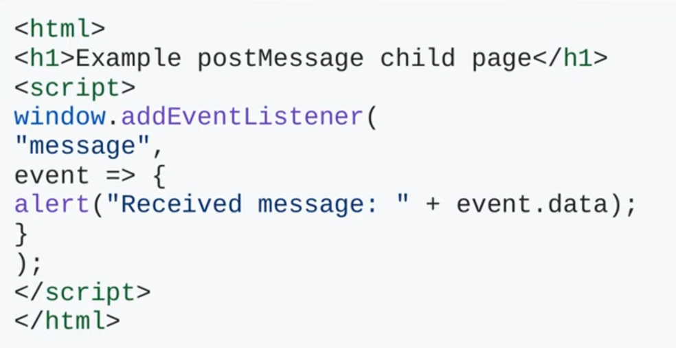
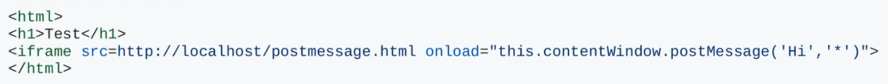
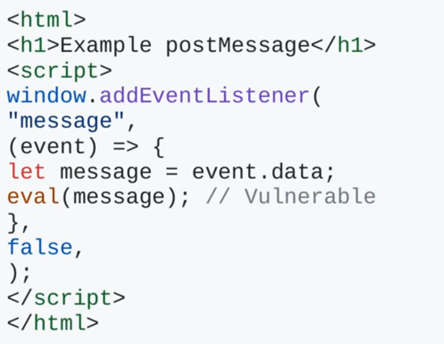
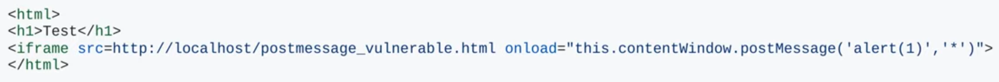

Level 0
Basic example of postMessage listener:

Example of how to send info to a listener:

Hi = message
* = originBasic postMessage vulnerability:

Here the message it recieves will be passed through an eval function, leading to XSS. To exploit this XSS we must do a web page that sends a postMessage to the listener:
